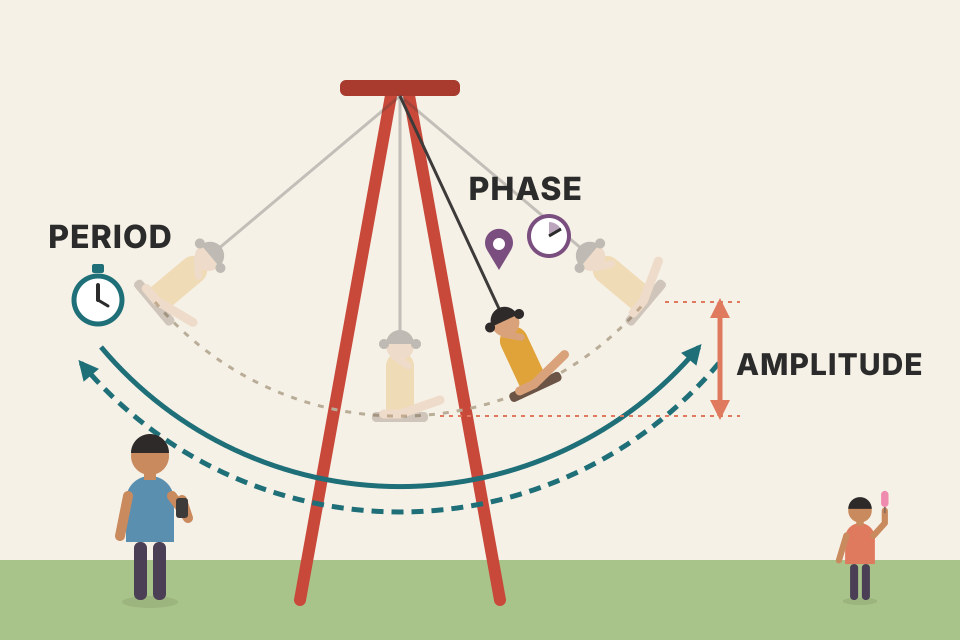
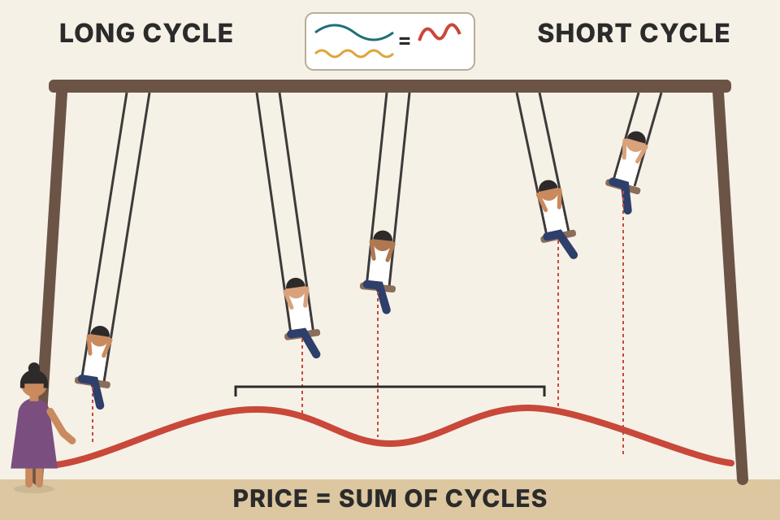
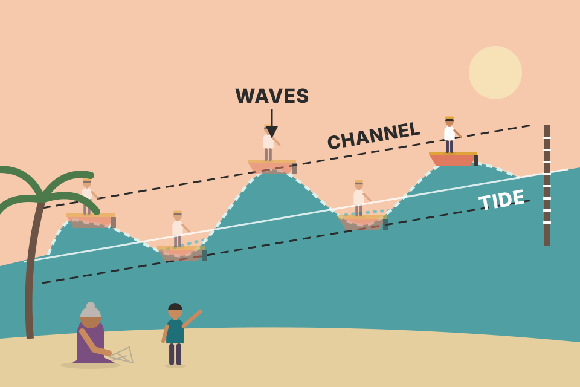
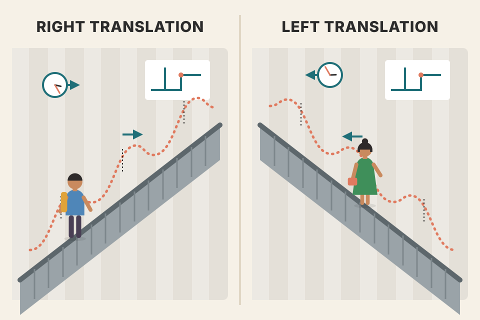

The cycle analyst's view of markets, in the book's order: what a cycle is, the principles that tie cycles together, how adding waves creates channels and chart patterns, the cycle lengths Murphy names, left and right translation, how to find cycles, seasonal and stock market cycles, and how cycles tune other indicators. Every chart is built from simulated waves and noise, never real prices. Press the button to roll new phases and new noise.
One chain of ideas: a cycle has three numbers; prices are the sum of many cycles; the cycles are related to each other in simple ways; so you can find the important ones, read the trend from the longer one, and time trades with the shorter one.
Up to now the book has focused on price; time has been present everywhere but treated as secondary. This chapter looks at forecasting through the eyes of cyclic analysts, who believe time cycles hold the ultimate key to why markets rise and fall. The question changes from which way and how far to when a market will get there, or when a move will even begin.
A daily bar chart is really a time and price chart: the vertical axis is price, the horizontal one is time. Many traders look only at the price half. Yet time was already hiding in every earlier tool:
Those time ideas aren't applied in a consistent, dependable way. Cyclic analysts go further: time cycles are the determining factor in bull and bear markets, and every other tool improves when tied to cycles. Moving averages and oscillators can be tuned to dominant cycles; cycles can tell valid trendlines from invalid ones; price patterns work better combined with cyclic peaks and troughs; and "time windows" let you ignore extraneous price action and focus only on the times when important cycle tops and bottoms are due.
The cycles book Murphy found most intriguing: Cycles: The Mysterious Forces That Trigger Events, by Edward R. Dewey (a pioneer of cyclic analysis) with Og Mandino. Thousands of apparently unrelated cycles were isolated, spanning hundreds and sometimes thousands of years. The examples Murphy quotes:
| Cycle | Length |
|---|---|
| Atlantic salmon abundance | 9.6 years |
| International battles, tracked 1415–1930 | 22.20 years |
| Sunspot activity, average since 1527 | 11.11 years |
| Real estate activity | 18.33 years |
| Stock market | 9.2 years |
Murphy's Figure 14.1 shows a 22.2-year cycle in the incidence of sunspots (drought often follows two years after the sunspot minima, last seen in the early 1970s and due again in the mid-1990s). Figure 14.2 shows the 22.2-year cycle in international battles, due to top in 1982. In both, a dotted "ideal" cycle is drawn over the actual detrended data.
Dewey's two startling conclusions. First, cycles in unrelated things cluster around similar periods: on p.188 of his book he lists 37 examples of the 9.6-year cycle, including caterpillar abundance in New Jersey, coyotes in Canada, US wheat acreage and US cotton prices. Second, those similar cycles move in synchrony: they turn at the same time. Figure 14.3 ("18.2-year cycles on parade", taken from the 1973 Manor Books edition of Dewey's book) shows 12 examples of an 18.2-year cycle, including marriages, immigration and US stock prices; the other rows include Nile flood stages, real estate activity, building construction and Java tree rings (inverted). Dewey concluded that some outside force must be causing them, as if the universe had a pulse running through so many areas of human life.
In 1941 Dewey organised the Foundation for the Study of Cycles, the oldest organisation in cycles research and the recognised leader in the field. It publishes Cycles magazine (research across many areas, including economics and business) and a monthly report, Cycle Projections, applying cycle analysis to stocks, commodities, real estate and the economy.
Detrended means the long-term trend has been removed so only the swings around it remain. If a series grows over centuries, its cycles ride on a slope; subtracting a smooth trend (often a centered moving average) lays the cycle flat so its length can be measured. Murphy mentions in Ch.9 that centered averages are used almost only by cycle analysts for exactly this (Ch.9, section 11). Section 14 below lets you try it.
Murphy's diagrams come from J.M. Hurst's 1970 book The Profit Magic of Stock Transaction Timing, which deals mainly with stock market cycles and which Murphy calls one of the best explanations of cycle theory in print.

A swing in a park. Amplitude is how high it goes from lowest to highest point. Period is how long one full swing takes. Phase is where in the swing it is right now. Know all three and you can say when it will next be at the bottom, without watching.
The right-hand shaded zone is "the future": the wave there is simply continued. The next-low date in the readout is today + (period − days since last trough), exactly Murphy's 20-day example. The prediction is only as good as the assumption that the period and amplitude stay fixed; sections 05 (variation) and 20 (MESA) are about what happens when they don't.
Murphy's wave runs from −$5 to +$5, so its amplitude is 5 − (−5) = $10, measured trough to crest. (Engineers usually call the $5 centre-to-peak height the amplitude; cycle analysts use the full $10. Not in the book.) Its period is 20 days and it last bottomed 10 days ago, so:
Why projections decay (beyond the book): if the real period is 21 days and not 20, each cycle adds a day of error. The first projected low is 1 day late, the second 2 days, the third 3. Timing errors add up with every cycle you project, which is why cycle analysts re-anchor on each new confirmed low instead of projecting far ahead from an old one. Set the period slider to 21 and the last trough to 10: the "next low" moves from 10 to 11 days.

Several children on swings of different lengths, all tied to the same rope. The rope's height at any moment (the price) is the sum of all their positions. Long swings set the big rhythm; short swings add ripples. When a long swing peaks while a short one dips, the rope shows two humps: a double top.
The double top in the first preset comes from timing, not from any "pattern psychology": wave B (half the length) bottoms right at wave A's crest, so it carves a dip into the top. Turn on the harmonic lock and synchronous troughs and you get Murphy's tidy picture: every A trough is also a B trough, and the composite lows are deep and sharp. Shift wave B's trough (lacking synchronicity) and the lows smear out; make B's period 27 (lacking harmonicity) and the shape changes every cycle, so no two tops look alike. That last case is why real charts rarely repeat exactly.
Wave A: a 40-day cycle from −10 to +10 (amplitude 20). Wave B: a 20-day cycle from −6 to +6 (amplitude 12). Both bottom on day 0 (synchronous) and B is exactly half of A (harmonic). Price = A + B:
| day | wave A | wave B | price = A + B | what you see |
|---|---|---|---|---|
| 0 | −10 | −6 | −16 | both troughs land together: a deep, sharp low |
| 10 | 0 | +6 | +6 | B's crest pushes price up early |
| 20 | +10 | −6 | +4 | A's crest, but B's trough cuts a dip into it |
| 30 | 0 | +6 | +6 | B's next crest: a second hump |
| 40 | −10 | −6 | −16 | the next combined low, exactly one A-cycle later |
Working it out between the rows, the two highs are about +8.1 on days 12.7 and 27.3, with a dip to +4 on day 20: a double top made only by timing. The low is −16, deeper than either wave alone, because summation adds the two troughs. Press the first preset above (it uses these same two waves) and you'll see this shape. Change B's trough by 10 days and the numbers flip: B's crest now lands on A's crest, the top becomes a single +16 spike and the lows split in two.
price_physics_basics.md).Murphy says that when individual markets are examined, this nominal model accounts for most cyclic activity. Look at the days column: 40, 20, 10 and 5 days account for most of the popular moving-average lengths; the well-known 4, 9 and 18-day averages are a variation of 5, 10 and 20; many oscillators use 5, 10 and 20 days; and weekly-rule breakouts use the same numbers turned into 2, 4 and 8 weeks.
Variation is the honest footnote to section 04: real cycles stretch and shrink, troughs arrive a little early or late, and amplitudes change. The nominal model is a list of starting guesses for where to look, not a schedule. Murphy calls each step a halving (except 54 → 18 months), but where the table switches units the arithmetic doesn't all work out: 40 weeks is roughly half of 18 months (about 78 weeks), while 20 weeks is about 100 trading days, so the step down to 80 days is not a half. Read Fig 14.10 as nominal labels, not a calculation (this check is beyond the book).
Chapter 3 of Hurst's book (not Murphy's) explains in detail how the standard techniques (trendlines and channels, chart patterns, moving averages) are better understood, and better used, together with cyclic principles.

A boat on a wave on a tide. The tide (long cycles, drawn as a line) lifts everything; the waves rock the boat up and down around it. Seen from the shore, the boat bounces between two parallel lines: a channel. Add a slower swell under the waves and some bounces stand taller than others: shoulders and a head.
In the head-and-shoulders build, the short cycle's crest lands exactly on the long cycle's crest (the head), with the short cycle's neighbouring crests on either side (the shoulders, lower because the long cycle is lower there). In the V top all three cycles crest on the same day, so the composite rises steeply into the top and falls steeply out of it, with no rounding. The pattern is the arithmetic of timing.
Many cycles affect markets, but the only ones of real forecasting value are the dominant cycles: those that consistently affect prices and can be clearly identified. Most futures markets have at least five dominant cycles.
As in the earlier chapter on long-term charts (Ch.8), analysis should begin with the long-term picture and work toward the shorter term. For cycles that means: start with the long-term dominant cycles (several years), then the intermediate ones (several weeks to several months), and finally the very short-term cycles (several hours to several days), which are used to time entries and exits and to help confirm the turns of the longer cycles. Fig 14.13 (from Walt Bressert's The Power of Oscillator/Cycle Combinations) stacks a seasonal cycle, a primary cycle, a half-primary cycle, a trading cycle and alpha/beta cycles above the price.
Reading a map: country first, then the city, then the street. The street map alone (the 10-day wiggles) tells you how to turn at the next corner, not which city you're in.
Switch off everything except the 10-bar layer: the line wiggles evenly and has no direction. Add the 20-bar trading cycle, then the 80-bar primary cycle: now the wiggles sit on rising and falling legs. The longest layer decides the direction; each shorter layer decides the timing within it. That's why Murphy says to start long and work down.
| Category | Length (as printed on this page) |
|---|---|
| Long-term cycles | 2 years or more |
| Seasonal cycle | 1 year |
| Primary or intermediate cycle | 9 to 26 weeks |
| Trading cycle | 4 weeks |
| Alpha and beta cycles (the trading cycle splits into two) | about 2 weeks each |
The labels Primary, Trading, Alpha and Beta are Walt Bressert's names for the cycle lengths (Fig 14.13).
Even longer cycles exist. The best known is the approximately 54-year Kondratieff cycle, a controversial long cycle in economic activity first found in the 1920s by the Russian economist Nikolai D. Kondratieff. It appears to influence virtually all stock and commodity prices; a 54-year cycle has been identified in interest rates, copper, cotton, wheat, stocks and wholesale commodity prices.
With only a few complete 54-year waves since 1789, there are very few data points to test whether the cycle is real or a pattern the eye found. That's a large part of why Murphy calls it controversial.
Shading = the 80-bar primary cycle's rising (green) and falling (red) halves. The marks are the 20-bar trading cycle's troughs (buys) and crests (sells). Untick the box to trade every trough and crest: the signals against the primary direction do much worse, because the bigger wave is pulling against them. Important caveat: in this simulation the true cycle timing is known; real traders only ever estimate it.
Murphy gives the idea, not exact entry and exit rules. To test it, this page turns it into a trade (our rules, not Murphy's). The trader knows one past trading-cycle low and assumes a trading-cycle length L. The primary cycle is taken as 4L, so its rising half is the first 2L bars after that low.
The chart steps through one simulated market trade by trade. The table pools 60 simulated markets of each kind at your L (roll a new market at the top to change the set). Read it from the top:
Trading with the trend runs through all of technical analysis. Earlier, Murphy suggested buying short-term dips when the intermediate trend is up and selling short-term bulges in downtrends. In the Elliott Wave chapter, five-wave moves happen only in the direction of the next larger trend (Ch.13). So before using a short-term trend for timing, first find the direction of the next longer trend and trade that way. The same holds for cycles: the trend of each cycle is determined by the direction of its next longer cycle. Put the other way: once the trend of a longer cycle is known, so is the trend of the next shorter one.
The simulated price is a 20-bar (4-week) cycle plus a 40-bar (8-week) cycle plus noise. A 20-bar cycle alone can't break its own previous 20-bar high: each new crest is the same height as the last. A new 4-week high needs something extra lifting the whole wave, and the next longer cycle turning up is the usual suspect. The readout measures how many bars after the latest 8-week (40-bar) low each breakout came, and how many fell in that cycle's rising half: the breakout confirms the turn after it has happened, the cycle version of "trend followers are late but right".
28 calendar days is 4 weeks. Each week has 5 trading days, so 4 × 5 = 20 trading days. Halve it and you get the harmonics 10 and 5; double it and you get 40. Those four numbers (5, 10, 20, 40) are the moving-average and oscillator lengths Murphy lists, and 4, 9 and 18 are their slightly shorter variants. In weeks the same ladder is the 1, 2, 4 and 8-week rules: a 4-week high is the highest price of the last 20 trading days, and an 8-week high the highest of the last 40. (This page's simulations use closing prices only, so they use the highest close.)
Each row pools 60 simulated markets. "Higher 10 bars later" asks the trader's real question: after the breakout, was price higher two weeks on?
Murphy says translation may well be the most useful part of cycle analysis. It is the shift of a cycle's peak to the left or right of the ideal midpoint.

Walking up an escalator that's moving. Going up, you reach the top of each step-climb later because the escalator keeps carrying you up (crest shifts right). Walking down on a down escalator, each rise is cut short and the fall comes early (crest shifts left).
Add a rising line to a symmetric wave and the point where the combined slope turns from up to down moves later: the trend keeps pushing up after the cycle has started to fall, so the top is delayed (and the low is pulled slightly earlier). The rise from low to top now lasts longer than the fall: right translation. A falling trend does the opposite. Set the longer cycle's amplitude to 0 and the trend to 0: every crest sits at day 10 of 20. Raise either and watch the "days up, days down" readout. (In this pure-wave simulation the troughs shift a little too; Murphy's point that troughs are steadier than crests is about real markets.)
Murphy's reading: a 20-day cycle's ideal crest is on day 10. Say a crest comes on day 13: 13 days up, 7 down, so it's right translated, a bullish sign. A crest on day 7 (7 up, 13 down) is left translated, bearish.
How far does a trend move the crest? Take a wave from −$5 to +$5 (amplitude A = $10, period P = 20) and add a steady rise of s dollars a day. The top is where the wave's downward slope just cancels the trend. That happens a time Δ after the ideal crest, where
and the trough comes Δ earlier by the same rule. With s = $0.50 a day: s·P ÷ (π·A) = 10 ÷ 31.4 = 0.32; arcsin(0.32) = 0.32 radians; Δ = (20 ÷ 6.28) × 0.32 ≈ 1.0 day. The crest moves about a day later and the trough about a day earlier, so the cycle runs roughly 12 days up, 8 down. Check it on the chart: set the longer cycle's amplitude to 0 and the trend to 0.5 and the readout shows a crest at day 12 of 20. At s = $0.20 the split is about 11 / 9; at $1.00 it's about 14 / 6. Once s reaches π·A ÷ P ≈ $1.57 a day, the wave can no longer make price fall at all: the troughs and crests vanish into the trend.
An accordion of evenly spaced pins over the chart. Squeeze or stretch it until most pins land on a low. When they do, the gap between pins is the cycle length, and the next pin to the right is the date of the next expected low.
The simulated price hides one dominant cycle (its length changes when you roll a new market) under a trend and noise. Start at the default 10 and slide: the "lines near a low" score jumps when the spacing matches the hidden length or a whole multiple of it, and the anchor must also line up (phase). Beyond the book: tick the detrend box to subtract a centered 41-bar average (the cycle analyst's use of centering, Ch.9 §11). With the trend removed, the lows become far easier to see, which is what "detrended data" in Dewey's figures means. Note the detrended line stops 20 bars before the end: a centered average needs future prices.
"Walk the procedure" runs the by-eye method as four steps: anchor on the first clear low, stretch the spacing until the lines land on lows, nudge the anchor to fit the phase, then read off the next line past the last bar as the projected low. It does by brute force what Murphy describes doing by eye or with a cycle-finder tool. Run over 200 simulated markets from this recipe while writing this page, the scan landed within 10% of the hidden length in 133 of them (about two-thirds) and on twice the length in 36 (about one in five). Twice the length is a real trap, because every second low is still a low. Murphy's fix is to check the result against the nominal model (section 05) and against other markets.
All markets are affected to some extent by an annual seasonal cycle: a tendency to move in a given direction at certain times of the year. The reasons are clearest in agricultural markets, but virtually all markets show seasonal patterns, financial markets included. Murphy's examples (his seasonal charts came from the Moore Research Center, which specialises in seasonal analysis of futures):
| Market | Seasonal tendency Murphy describes |
|---|---|
| Grains | seasonal lows usually around harvest, when supply is most plentiful |
| Soybeans | most tops April–June, bottoms August–October; Fig 14.21: usually peak in May, bottom in October |
| Grains & soybeans | "February Break": prices usually drop from late December or early January into February |
| Copper | strong seasonal uptrend from January/February, tending to top in March or April; Fig 14.22: usually bottoms in October and February, peaks April–May |
| Silver | low in January, higher prices into March |
| Gold | tends to bottom in August |
| Petroleum products | tend to peak in October and usually don't bottom until the end of winter; Fig 14.23: crude peaks in October, turns up in March |
| US dollar | tends to bottom in January; Fig 14.24: the German mark's January peak coincides with that dollar low |
| Treasury bonds | important highs usually in January; weaker in the first half of the year, stronger in the second (Fig 14.25) |
Each simulated year is the hidden seasonal shape plus a lot of random noise. One year alone looks like noise. Averaging 15 years cancels much of the noise and the shape appears, scaled 0–100 like the seasonal charts in Murphy's figures (15-year averages, 1983–97, for soybeans, copper, the mark and bonds; 14 years, 1984–97, for crude oil). Choose "no seasonal pattern" to see the trap: averaging still produces a wiggly line with a "best month" and a "worst month", just from leftover noise. A seasonal pattern needs a reason (harvest, heating demand) as well as a chart.
Average the price for each month over all the years. Say soybeans average 590¢ in October (the lowest month), 650¢ in May (the highest) and 610¢ in January. A 0–100 seasonal index rescales each month as 100 × (month − lowest) ÷ (highest − lowest): October = 0, May = 100, January = 100 × 20 ÷ 60 ≈ 33. The book's charts are drawn on a 0–100 scale but don't print the formula; this min-to-max scaling is the usual one and is what the simulation above uses.
Why 15 years and not 3: averaging Y years shrinks random noise by about √Y. Fifteen years cuts it to about a quarter (√15 ≈ 3.9); three years only to about 58% (√3 ≈ 1.7). Slide the years control down to 3 and watch the composite stop matching the hidden pattern.
Murphy's stock-market calendar (he points to Yale Hirsch's annual Stock Trader's Almanac for this and much more on stock market cycles): the strongest three-month span is November through January. February is weaker, followed by a strong March and April. After a soft June, the market turns strong in July (the start of the traditional summer rally). The weakest month is September. The strongest month is December, ending with the well-known Santa Claus rally just after Christmas.
These are US stock-market tendencies from the almanac's history, quoted as of the late 1990s. A calendar effect is an average over many years; any single year can do the opposite. Whether they hold for Indian indices is a separate question nobody in the book tested.
Hirsch's January Barometer says that what the S&P 500 does in January determines what kind of year the market as a whole will have. A variation: the S&P 500's direction in the first 5 trading days hints at the year ahead. Don't confuse it with the January Effect, the tendency for smaller stocks to outperform larger stocks in January.
Each simulated year is 12 independent random monthly returns, so January carries no information about the other 11 months. Yet the barometer still "works" (January and the year move the same way) clearly more than half the time when compared with the whole year, because January is part of the year (orange bars). Against February–December alone (teal bars) it is right only a little more than half the time, and that small excess comes from drift alone: when markets usually rise, January and the rest of the year are both usually up, so they agree by chance. So a hit rate above 50% doesn't prove the barometer; the fair test compares January with the remaining eleven months and with how often they would agree anyway.
With zero drift and January independent of the other months, January carries 1 of the year's 12 equal shares of variance, so its correlation with the full-year return is 1 ÷ √12 ≈ 0.29. For two normal variables with correlation ρ, the chance they have the same sign is ½ + arcsin(ρ) ÷ π = 0.5 + 0.29 ÷ 3.14 ≈ 59%. So a barometer that is pure noise is "right" about 59% of the time when scored against the whole year, before any drift is added. The simulation's first orange bar lands close to it (about 59–60%, with sampling noise from 3,000 simulated years). Against February–December alone the figure is exactly 50% at zero drift.
Another well-known cycle affecting stocks is the 4-year cycle, called the Presidential Cycle because it matches the elected term of US presidents. Each of the 4 years has a different historical return. As printed: the election year (1) is normally strong; the postelection and midyears (2 and 3) are normally weak; the preelection year (4) is normally strong. According to Hirsch's almanac, since 1904 election years have seen average gains of 224%, postelection years gains of 72%, midterm years 63% and preelection years 217% (figures exactly as printed in the book). Murphy points back to Fig 14.16, where the Ehrlich Cycle Forecaster picks out the 4-year cycle on the S&P 500.
The book doesn't say over what span these "gains" are summed or averaged, and its numbering (election = 1, preelection = 4) is unusual: most writers count the postelection year as year 1. Treat the figures as Murphy prints them, a ranking (election and preelection years strong, the middle two weak), not as returns you could expect in one year.
Two of the most promising overlaps between cycles and traditional indicators are moving averages and oscillators. Both are believed to work better when their time periods are tied to each market's dominant cycles.
The oscillator here is momentum: today's close minus the close N days ago (Ch.10). For a pure wave of length P, its swing is proportional to sin(π·N ÷ P). That is largest exactly at N = P ÷ 2 and falls to zero at N = P: an oscillator as long as the cycle compares each day with the same point one cycle earlier and goes flat. So half the cycle isn't folklore; it's the length that shows the cycle most strongly. The readout compares your N with that ideal.
A 20-day cycle from −$10 to +$10 (amplitude $20). An N-day momentum line (today minus N days ago) then swings between ±$20 × sin(π·N ÷ 20):
| N | swing | where its low falls |
|---|---|---|
| 5 | ±$14.1 (71%) | 2.5 days before the price trough: it leads |
| 10 (half the cycle) | ±$20.0 (100%) | exactly on the price trough, and its high exactly on the crest |
| 15 | ±$14.1 (71%) | 2.5 days after the trough: it lags |
| 20 (the full cycle) | $0 (flat) | no signal: each day is compared with the same point one cycle back |
Why: momentum = A·sin(π·N ÷ P) × a wave shifted by N ÷ 2 − P ÷ 4 days. At N = P ÷ 2 the shift is zero, so the oscillator moves in step with the cycle at full strength. That's the mechanism behind Murphy's half-cycle rule. For his 40-day example it gives 20.
Finding the right dominant cycles is harder because cycle lengths aren't static: they keep changing. What worked a month ago may not work a month from now. In MESA and Trading Market Cycles, John Ehlers uses a statistical method called Maximum Entropy Spectral Analysis (MESA).
This is not Ehlers's maximum-entropy method; it's a plain Fourier periodogram, the simplest spectral tool, used here only to show the idea. The price's hidden cycle stretches from about 15 to about 40 bars as time passes. Slide the 80-bar window along: the tallest bar (the measured dominant cycle) follows the true length, a little blurred. A fixed 10-day oscillator tuned at the start would be badly mistuned by the end. MESA's selling point was doing this measurement sharply on short windows, where a plain periodogram is coarse.
A plain Fourier transform of an 80-bar window can only cleanly separate cycles that fit a whole number of times into 80 bars: 80, 40, 26.7, 20, 16, 13.3… bars. Near 20 bars the neighbours are 26.7 and 16, so the peak is roughly P² ÷ W = 20² ÷ 80 = about 5 bars wide. It can't sharply tell an 18-bar cycle from a 22-bar one. Doubling the window to 160 bars halves the blur, but in this market the cycle stretches by about 10 bars over 160 bars, so the longer window mixes old and new lengths. Sharp and current at once is the trade-off MESA was sold on.
trading_equations.md). In your backtests the HMM regime filter gave "no consistent improvement" (backtest_results_summary.md), a reminder that measuring the mode is easier than profiting from it.Troughs are more stable and reliable; most variation happens at the crests (sections 03, 13).
Amplitude $10 (trough to crest), period 20 days (Fig 14.5, 14.6; section 03).
In about 10 days, if the cycle stays constant (section 03).
Summation: price = sum of cycles. Harmonicity: neighbours related by a small whole number, usually 2. Synchronicity: cycles tend to bottom together. Proportionality: longer cycles have proportionally bigger amplitudes (section 04).
54 months to 18 months, which is a third (section 05).
Two cycle lengths combined with a rising line (the sum of all longer cycles); the short cycle's crest on the long crest makes the head (section 06).
Sell its crests short; don't buy its troughs. The longer cycle sets the side (sections 10–11).
At the very least, the next longer (8-week) cycle has bottomed and turned up (section 12).
Bullish: right translation, the crest is to the right of the day-10 midpoint, so the next longer cycle is rising (section 13).
Tops April–June (usually May), bottoms August–October (usually October) (section 15).
The barometer: the S&P 500's January sets the tone for the year. The effect: small stocks tend to beat large ones in January (section 17).
A 20-day oscillator (half the cycle); a 40-day MA with a 20-day or 10-day MA (section 19).
The error adds up: each projected trough lands 2 more days away from the real one, so after a few cycles you are buying near crests. In the section 10 test (simulated), L = 18 cuts the average trade from about +9% to near zero and about half the trades hit their stops. Re-anchor on each confirmed low (sections 03, 10; the test is beyond the book).
The breakout confirms the 8-week turn late, around 15 bars after its low and near its crest, and nothing longer carries price further. Add a longer rising cycle and the same breakouts are followed by higher prices more often than not. The breakout pays when the next longer cycle is pushing the same way (sections 11–12; simulation beyond the book).
N-day momentum on a P-day cycle swings by A·sin(πN/P), which is largest at N = P/2. At that length its lows and highs also fall exactly on the price troughs and crests; shorter lengths lead, longer lengths lag, and N = P goes flat (section 19; the maths is beyond the book).